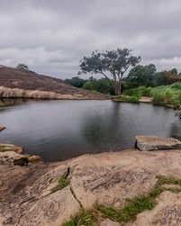
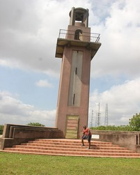
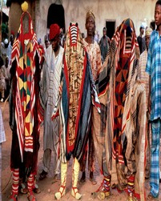

Learn Ibadan

Our aim is to bring all entrepreneurs together, Ibadan is a city of over 12million people.
We aim to connect you to these people and help you find your business path.
We welcome you to the largest city in West Africa,
the pacesetter of Nigeria, get ready to be enveloped in the brown roof city hustlers hub!!
Ibadan, coined from the phrase "Eba Odan", which literally means 'by the edge of the meadow',
came into existence in 1829, during a period of turmoil that characterized Yorubaland at the time.
It was in this period that many old Yoruba cities such as old Oyo (Oyo ile),
Ijaye and Owu disappeared, and newer ones such as Abeokuta, new Oyo (Oyo atiba) and Ibadan sprang up to replace
them. According to local historians, Lagelu founded the city, and was initially intended to be a war camp for
warriors coming from Oyo, Ife and Ijebu. As a forest site containing several ranges of hills,
varying in elevation from 160 to 275 metres, the location of the camp offered strategic defence opportunities.
Moreover, its location at the fringe of the forest (from which the city got its name)
promoted its emergence as a marketing centre for traders and goods from both the forest and grassland areas.
The Oke’Badan Cultural Festival is a colorful event celebrated to commemorate the founding of Ibadanland and
show gratitude to the founders. The festival, which means the ‘Hills of Ibadan’, celebrates how founders,
led by Lagelu, originally settled on the hills of Ibadan and later came down to found the Ibadan town itself at
the foot of the hills. The festival, which brings together the sons and daughters of Ibadan from far and near,
holds on the third Thursday of March of every year.
Highlights of the festival include cultural shows, stage plays, beauty pageants and competitions.
Want to Visit ibadan?
Here are the top three site to visit!
Ado-Awaye-Suspended Lake
Did you know Ibadan is built on 7 Hills?
One of them has a suspended Lake!!
Oke-badan Cultural day
Always on a Thursday, A day set aside to worship the Gods of the 7 Hills
Join the Dance
Ọdún Égúngún
The Masquerade are out!
The drums are beating and the people are ready, It a day of dancing
Events
Weather Summary
Currently:
Temp: °F
Humidty: